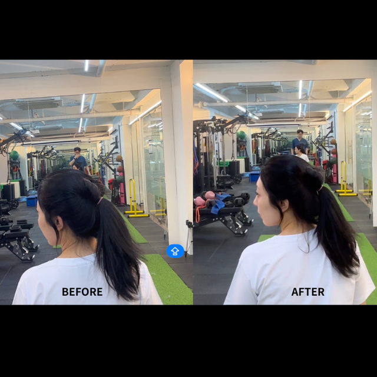
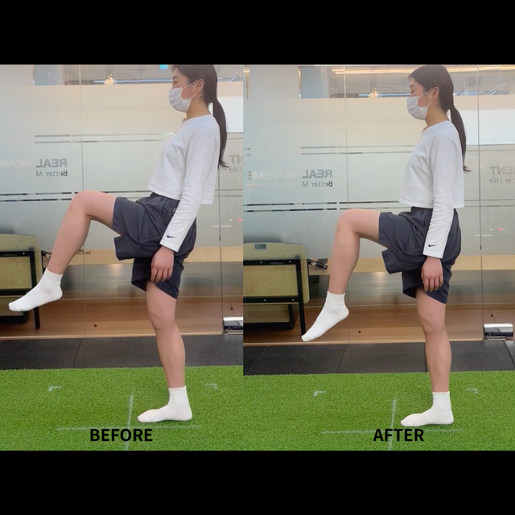

01. 어깨 외전
어깨 불편은 흉곽·경추 움직임과 같이 오는 경우가 많습니다. 어깨만 풀면 다시 굳을 수 있습니다.
결과는 사람마다 다릅니다. 아래는 같은 평가 기준으로 남긴 기록이며, 완치·즉효를 뜻하지 않습니다.
어깨 불편은 흉곽·경추 움직임과 같이 오는 경우가 많습니다. 어깨만 풀면 다시 굳을 수 있습니다.

팔을 들어 올리는 범위와 날개뼈 경로를 같은 자세에서 재평가합니다.

한쪽으로 틀어지는 스쿼트는 고관절 회전 제한이 크게 작용하는 경우가 많습니다.

목이 안 돌아가면 어깨 높이와 흉추부터 확인합니다. 좌우 회전 차이를 다시 잽니다.

고관절이 막히면 허리가 보상합니다. 한 발 지지에서 몸통이 무너지는지도 같이 봅니다.

사진 한 장이 끝이 아닙니다. 같은 동작을 다음 세션에서 다시 찍어 비교합니다.